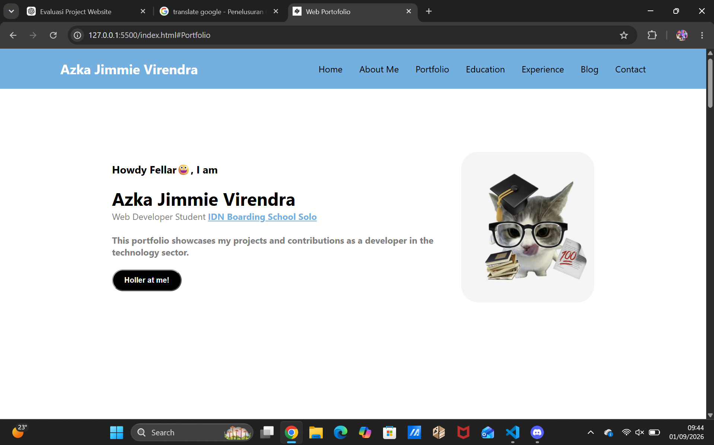
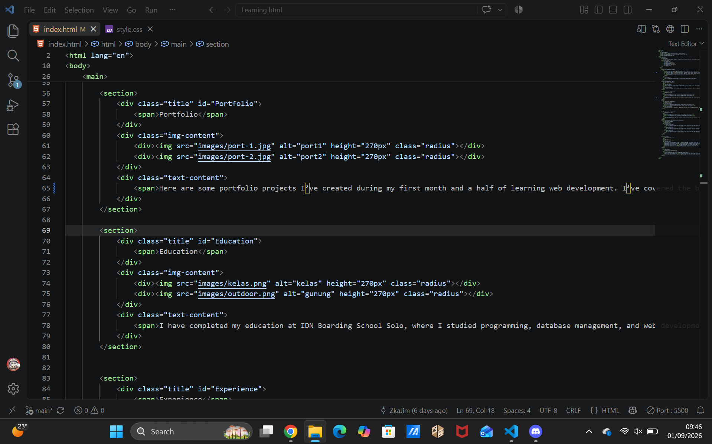
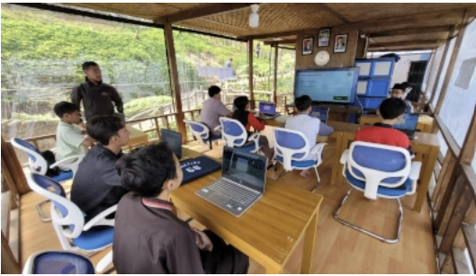
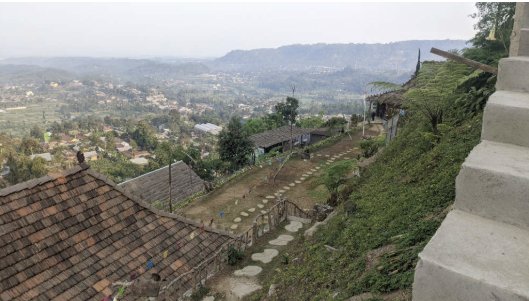
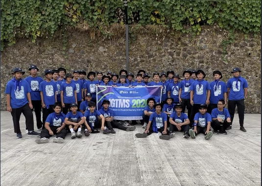
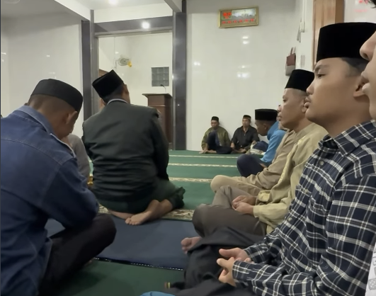
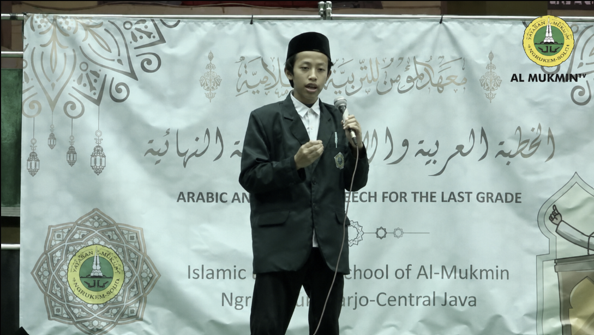
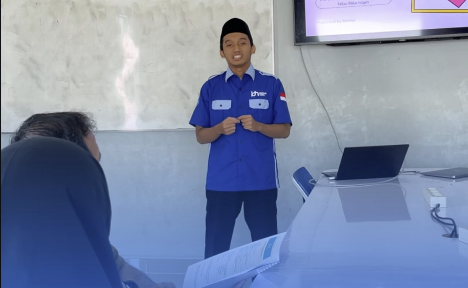

Hello Everyone😀, I am
Azka Jimmie VirendraWeb Developer StudentIDN Boarding School Solo
This portfolio showcases my journey and projects as I learn web development.

About Me

I was born in Surabaya, but I lived and grew up on an island nicknamed the "Mexico of Indonesia"(Madura). I started learning web development in August 2026 at IDN Boarding School Solo. This website is my first project as I begin my journey in programming.
Portfolio


Here are some portfolio projects I’ve created during my first month and a half of learning web development. I’ve covered the basics of HTML and CSS, as well as how to deploy websites to the public using Vercel.
Education


I'm student at IDN Boarding School Solo, where I studied programming, database management, and web development. In my opinion, the building itself is excellent; while relaxing, you can enjoy the beautiful natural scenery of Ngargoyoso, especially towards the late afternoon.
Experience


While studying at IDN Boarding School Solo, I participated in the "IGTMS" program, in which groups of three students lived at a local mosque and interacted with the surrounding community. Students were also expected to assist local residents, thereby fostering a caring character and a spirit of helping others.
Blog
 One day, in Al-Ukhuwah Islamic Boarding School in Sukoharjo, the admission results for the MSW Tahfidz program were posted on the notice board. Unfortunately, I was not accepted into the MSW Tahfidz program; instead, I was admitted to the RTQ program. The two programs are quite similar, differing mainly in their duration. Honestly, I am deeply grateful to have joined this program. It is an excellent environment for memorizing the Quran, and the local community is kind; beyond memorizing numerous Surahs, I have also gained valuable lessons regarding social interaction.
One day, in Al-Ukhuwah Islamic Boarding School in Sukoharjo, the admission results for the MSW Tahfidz program were posted on the notice board. Unfortunately, I was not accepted into the MSW Tahfidz program; instead, I was admitted to the RTQ program. The two programs are quite similar, differing mainly in their duration. Honestly, I am deeply grateful to have joined this program. It is an excellent environment for memorizing the Quran, and the local community is kind; beyond memorizing numerous Surahs, I have also gained valuable lessons regarding social interaction.

My English teacher summoned me to his office and told me about an English and Arabic speech competition being held at the Al-Mukmin Ngruki Islamic boarding school. Interested, I signed up. After a week of preparation, I set off for the event. While waiting for my name to be called, I felt a bit nervous, as this was a Central Java provincial-level competition organized by the Ministry of Religious Affairs. On the journey home, I reflected on the deeper lesson of the competition: it wasn't merely about who had the best costume or delivery, but about the sincerity of one's commitment to spreading the message of the faith on a global scale.
I was assigned the task of writing a "life proposal"—something I had never done before. The requirement to create a comprehensive Google Doc made me hesitate, and the need to present it to my parents left me feeling even more flustered. However, I managed to calm myself down and began working on the assignment meticulously. The outcome was truly surprising; my parents were deeply moved to see me give the presentation. The lesson I learned is not to panic; instead, I should carefully determine my next steps to avoid mistakes, while also honing my soft skills in the process.
Contact
Holler at me !

Educational background